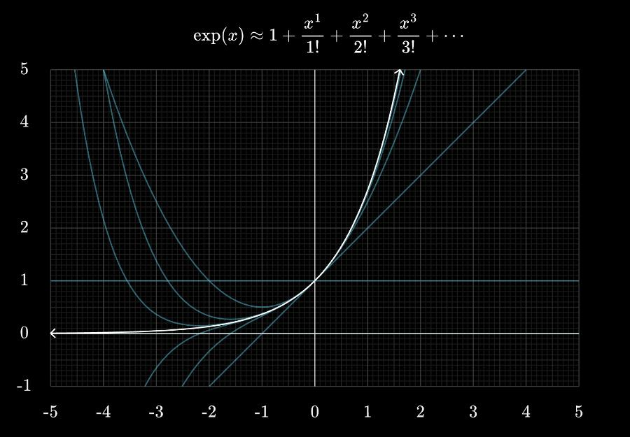
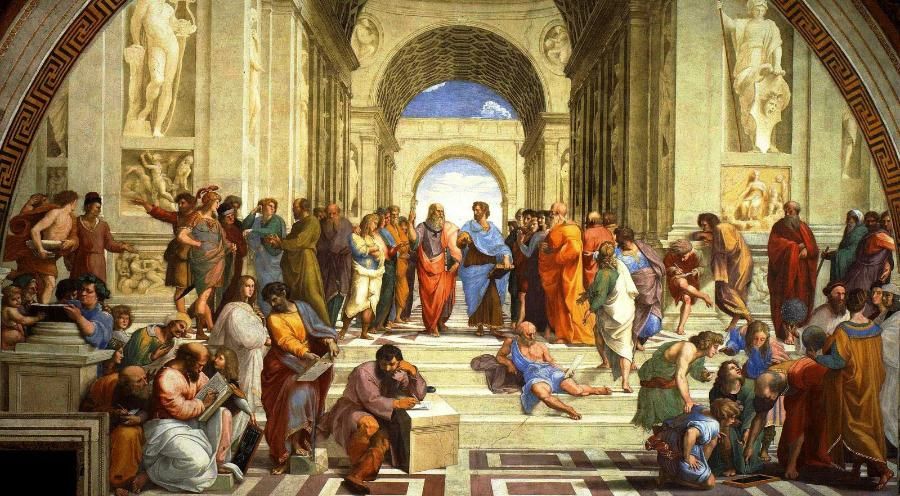

J’aime beaucoup l’idée de destinée. Pas au sens déterministe, pas une trajectoire figée qui dirait : “Tu finiras comme ça, quoi qu’il arrive.”
Mais plutôt au sens d’une direction. L’idée qu’il existerait, quelque part, une version plus accomplie de moi-même. Une ligne idéale vers laquelle je pourrais tendre. Non pas écrite d’avance, mais potentielle.
L’exercice n’est pas de démontrer que cette croyance est vraie mais simplement que cette perspective peut être utile. Et c’est peut-être suffisant.
Cet essai a pour but d’exposer une réflexion personnelle qui m’a permis de cadrer la notion d’identité et de la relier à celle de sens et de ce vers quoi l’on aspire.
J’en présenterai d’abord les présupposés et les fondements théoriques, avant d’en proposer une analogie mathématique pour clarifier mon idée. Je mettrai enfin ce raisonnement en perspective avec la pensée d’Aristote, dont le concept de puissance vient éclairer ce raisonnement.
Ce que cela suppose
Ce cadre repose sur un présupposé fort : l’existence humaine ne serait pas neutre. Elle serait orientée Il y aurait en chacun de nous des puissances, des dispositions, des inclinations profondes, et vivre consisterait à les actualiser.
On peut rejeter cette hypothèse et considérer que la vie n’a pas de direction intrinsèque, que le sens se construit arbitrairement, ou qu’il n’y en a pas.
Mais si l’on accepte, ne serait-ce qu’à titre heuristique, l’idée que nous portons en nous une forme plus accomplie de nous-mêmes, alors la manière de vivre change.
La question devient : comment s’en rapprocher ?
L’itération comme chemin
Un vélo ne tient en équilibre que lorsqu’il est en mouvement ; à l’arrêt, il tombe. C’est la “vélo”-cité qui crée la stabilité. Peut-être que la vie fonctionne de la même manière.
On cherche parfois à comprendre qui l’on est avant d’agir, à clarifier sa direction avant de commencer. Mais l’équilibre ne se trouve pas dans l’immobilité. C’est dans le mouvement que quelque chose se révèle. En expérimentant, en itérant, certaines choses ne prennent pas, d’autres accrochent, et quelques-unes finissent par s’imposer.
À force d’itérations, une cohérence apparaît. On ne découvre pas son identité d’un coup à mon sens ; on l’approche progressivement, en avançant. C’est dans l’exécution que le sens commence à se dessiner.
De l’élan à l’identité
Une fois que l’on admet que le mouvement et l’itération constituent un bon moyen de découvrir ce à quoi l’on aspire réellement, il devient possible de disséquer les phases de nos comportements. J’aime distinguer quatre étapes qui permettent de comprendre comment une activité passe, ou non, du statut d’essai à celui de dimension identitaire :
1 - Motivation 2- Discipline 3- Habitude 4- Identité
Motivation:
Prenons l’exemple de la course à pied. Au départ, il y a souvent un élan. Une vidéo inspirante, un ami, un objectif précis, un marathon à préparer. La motivation joue son rôle : elle déclenche le mouvement.
Discipline:
Puis vient la discipline. On suit un plan, on s’entraîne même quand l’envie est absente, parce qu’un objectif est en vue. Tant que cet objectif structure l’effort, la pratique tient.
Habitude:
Mais une fois la course terminée, l’objectif externe disparaît. C’est ici que quelque chose se joue. Soit la pratique s’arrête, parce qu’elle n’était qu’un moyen en vue d’une fin ponctuelle. Soit elle s’installe. Elle devient habitude : on court sans se demander si l’on doit courir. L’effort est intégré au rythme de vie.
Identité
Et parfois, pour certains, une étape supplémentaire est franchie. La course cesse d’être une activité parmi d’autres et devient une composante de l’identité. Cela devient évident et l’on se dit “je suis un coureur”. La pratique devient structurante ; elle organise le temps, les priorités, l’image de soi.
Toutes les itérations ne vont pas jusque-là, et ce n’est pas un échec. Mais lorsqu’une activité atteint ce niveau d’intégration, elle devient un terme stable dans l’équation personnelle. C’est à partir de là qu’une l’analogie mathématique peut nous aider à mettre ce cadre en image.
Le développement limité de notre vie
En mathématiques, un développement limité permet d’approximer une fonction complexe.
L’image importante à saisir c’est qu’une fonction a une courbe, comme la fonction exponentielle ci-dessous, et que plus un développement limité a d’ordres, plus la ligne bleue épouse la courbe de la fonction que l’on estime.

Ainsi, chaque nouvel ordre améliore l’approximation.
Peut-être que vivre, c’est faire la même chose avec soi-même. La “courbe idéale” n’est pas donnée d’un coup mais chacune de nos itérations correspond à un essai pour l’approcher progressivement.
Les ordres mathématiques deviennent nos piliers identitaires. Une fois que l’on en a trouvé un, on itère pour en ajouter un nouveau. On approxime notre vie idéale en ajoutant des dimensions identitaires :
Je suis père. Et…
Je suis chercheur. Et…
Je suis croyant. Et…
Je suis un coureur.
Chaque fois qu’une dimension devient intégrée, elle affine la trajectoire.
A l’inverse, chaque fois qu’une tentative échoue à dépasser la discipline, elle nous renseigne aussi : ce n’est peut-être pas constitutif de qui l’on est. Ainsi, l’identité devient une série d’approximations successives.
Aristote et le concept de puissance
L’idée selon laquelle l’existence humaine serait orientée n’est pas nouvelle. Chez Aristote, on trouve une distinction fondamentale entre puissance (dunamis) et acte (energeia). Une chose n’est pas seulement ce qu’elle est actuellement ; elle est aussi ce qu’elle peut devenir. Le gland porte en puissance le chêne. L’actualisation de cette puissance constitue son accomplissement.
Transposée à l’existence humaine, cette idée implique que nous portons en nous des dispositions, des formes possibles, qui ne demandent qu’à être réalisées. La vie ne serait pas une simple succession d’événements contingents, mais un processus d’actualisation progressive.

Cette perspective repose sur une anthropologie exigeante : elle suppose que l’homme a une nature, et que cette nature contient une orientation. On peut contester ce présupposé. Mais il offre une cohérence conceptuelle à l’intuition développée ici : vivre, ce n’est pas inventer arbitrairement son identité, c’est découvrir par l’expérience ce que l’on porte en puissance.
Conclusion
Ce modèle n’a pas vocation à exclure les autres. Au contraire. Avoir plusieurs modèles de pensée permet de prendre de la hauteur sur sa propre existence.
Celui-ci est simplement une proposition : considérer que l’on porte en soi une ligne idéale, et que vivre consiste à s’en rapprocher par itérations successives. Si ce modèle t’aide à clarifier ne serait-ce qu’un peu qui tu es, ce vers quoi tu tends, alors il aura rempli sa fonction.
A bientôt pour de nouvelles réflexions,
Elouan